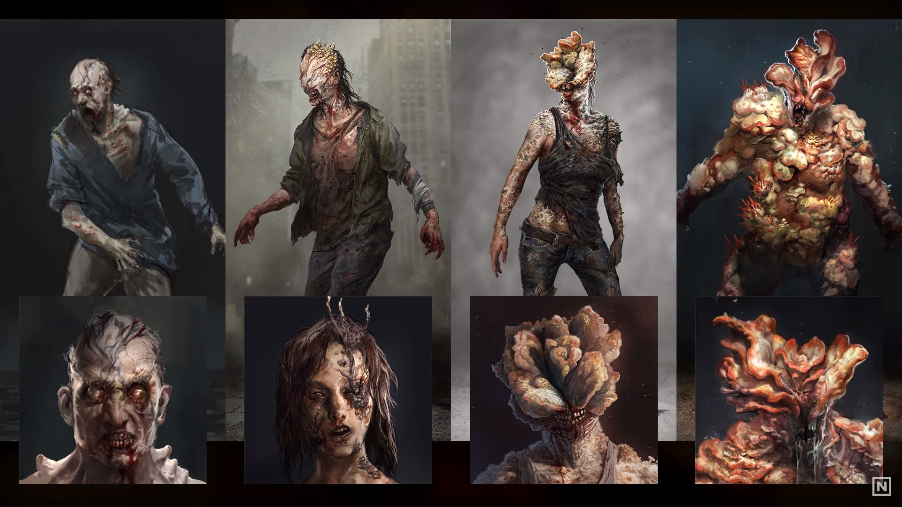

<!DOCTYPE html>
<html lang="fr">
    <head>
        <title>types d'infectés tlou</title>
        <meta charset="utf-8">
        <link rel="stylesheet" href="style.css" type="text/css"/>   
    </head>
    <body>
        <!-- zombies.png-->    
    </body>
</html>
<header>
    <h1>Les infectés dans The Last Of Us</h1>
    <nav>
        <ul>
            <li><a href="index.html">Accueil</a></li>
            <li><a href="page2.html">4 types d'infectés</a></li>
        </ul>
    </nav>
</header>

<section>
<h2>Développé par Naughty Dog</h2>
<p>Sortis le 14 juin 2013 sur PlayStation 3. The last of us est un jeu de type survival horror. <br />
Le jeu se déroule dans un univers post-apocalyptique, après une pendémie provoqué par le champignon le Cordyceps, qui prend possession de ses hotes humains.
<br />
<br />



</section>

<footer>
    <p>C'est un jeu qui a était adaptéé en série télévisée.</p>
</footer>
